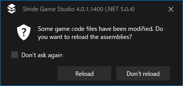
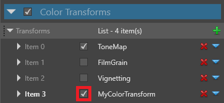

カスタム色変換
上級 プログラマー
Stride では、独自のカスタム色変換エフェクトを書くことができます。例えば、以下のものが作成できます。
- カメラに付着した水滴
- 画面遷移（フェードイン、フェードアウトなど）
- 苦痛や酔いを感じさせるエフェクト（例：色合いやその他のエフェクトの適用）
- オブジェクトの輪郭
カスタム色変換を作成するには、2 つのファイルを記述する必要があります。エフェクトシェーダー（エフェクト自体を含む）と、C# クラス（Game Studio でエフェクトにアクセスできるようにするスクリプト）です。
1. シェーダーを作成する
Stride Visual Studio 拡張機能がインストールされていることを確認してください。この拡張機能は、シェーダーファイルを SDSL（Stride シェーディング言語）から
.csファイルに変換するために必要です。Game Studio のツールバーで、
 （Open in IDE）をクリックし、Visual Studio でプロジェクトを開きます。
（Open in IDE）をクリックし、Visual Studio でプロジェクトを開きます。Visual Studio のソリューションエクスプローラーで、プロジェクト（例：MyGame.Game）を右クリックし、[追加] > [新しい項目] を選択します。

[クラス] を選択します。

[名前] 欄に、拡張子 ".sdsl" を持つファイル名（例えば MyColorTransformShader.sdsl）を記述し、[追加] をクリックします。
Stride Visual Studio 拡張機能では、
.sdslファイルから.csファイルを自動的に生成します。ソリューションエクスプローラーでは、.sdslファイルの子としてリストアップされます。.sdslファイルを開いて、既存の行を削除し、シェーダーを記述します。シェーダーは、HLSL をベースにした Stride シェーディング言語（SDSL）で記述します。詳しくはシェーディング言語をご覧ください。
例えば、以下のシェーダーは、画像の色に
MyColorパラメータを乗算します。shader MyColorTransformShader : ColorTransformShader { [Color] float4 MyColor; override float4 Compute(float4 color) { return color * MyColor; } };Note
ファイル内のシェーダー名（上のコードでは
MyColorTransformShader）と、ファイル名（例：MyColorTransformShader.sdsl）が同じであることを確認してください。
2. C# クラスを作成する
Visual Studio のソリューションエクスプローラーで、プロジェクト（例：MyGame.Game）を右クリックし、[追加] > [新しい項目] を選択します。
[クラス] を選択し、[名前] を記述して（例：MyColorTransform.cs）、[追加]をクリックします。
ファイルを開いて、クラスを書きます。
例えば、以下のコードでは、シェーダーを使用して、色
MyColor（シェーダーで定義されている）の値を供給するMyColorTransformクラスを定義しています。using Stride.Core; using Stride.Core.Mathematics; using Stride.Rendering; using Stride.Rendering.Images; namespace MyGame { [DataContract("MyColorTransform")] public class MyColorTransform : ColorTransform { /// <inheritdoc /> public MyColorTransform() : base("MyColorTransformShader") { } public Color4 MyColor { get; set; } public override void UpdateParameters(ColorTransformContext context) { Parameters.Set(MyColorTransformShaderKeys.MyColor, MyColor); // Copy parameters to parent base.UpdateParameters(context); } } }Note
ファイル内のクラス名（上のクラスの例では
MyColorTransform）が、ファイル名（例：MyColorTransform.cs）と同じであることを確認してください。ソリューションエクスプローラーで [ファイル] > [すべて保存] を選択して、すべてのファイルを保存します。
Game Studio でアセンブリを再読み込みします。

アセットビュー で、スクリプトと同じディレクトリに、先ほどのクラスと、エフェクトシェーダーが表示されます。
Note
以下のスクリーンショットのように、Game Studio がシェーダーをスクリプトとして誤って検出してしまう場合があります。

これが発生した場合は、Game Studio を再起動してください（[File] > [Reload project]）。
3. カスタム色変換を使用する
アセットビューで、グラフィックスコンポジターアセットをダブルクリックします。

すると、グラフィックスコンポジターエディターが開きます。

Post-processing effects ノードを選択します。
プロパティグリッドで、Color transforms の下部にある
 （追加）をクリックし、先ほど作成した色変換（例：MyColorTransform）を選択します。
（追加）をクリックし、先ほど作成した色変換（例：MyColorTransform）を選択します。
エフェクトを有効または無効にするには、Item の横にあるチェックボックスを使います。

指定したクラスの public プロパティを編集するには、Item を展開します。

プロパティを修正すると、Game Studio がそのエフェクトを自動的に更新します。
Warning
残念ながら、Game Studio にはこの部分にメモリーリークの問題があります。グラフィックスコンポジターで値を変更するたびに、60MB のメモリを消費します。Game Studio がメモリを使いすぎないように、プロパティを何度か変更した後は Game Studio を再起動することをお勧めします。これは既知の問題です。